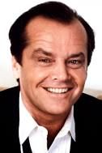
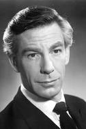

Майкл Кіттон-виконав роль Брюса Вейна/Бетмена.Народився в 1951 році в США.Прославився ролями в комендійних фільмах перед тим як отримати культову роль Бетмена.Його справжнє імя Майкл Джон Дуглас, а Кіттон - псевдонім.
Джек Ніколсон-зіграв Джокера.Один з найвидатніших героїв Голівуду.Найвідоміші його ролі у фільмі "Сяйво" та "Пролітаючи над гніздом зозулію".За свою карєру отримав 3 премії "Оскар".

Кім Бесінджер - зіграла журналістку Вікі Вейл .Розпочала карєру як модель, а потім стала акторкою. .Найвідоміші її ролі у фільмах "9 з половиною тижнів" та "Таємниці Лос-Анджелеса".
Майкл Гоф-зіграв дворецького Альфреда.Цей дуже відомий англійський актор народився у 1916 році.Славу здобув завдяки численним ролям у фільмах жахів.